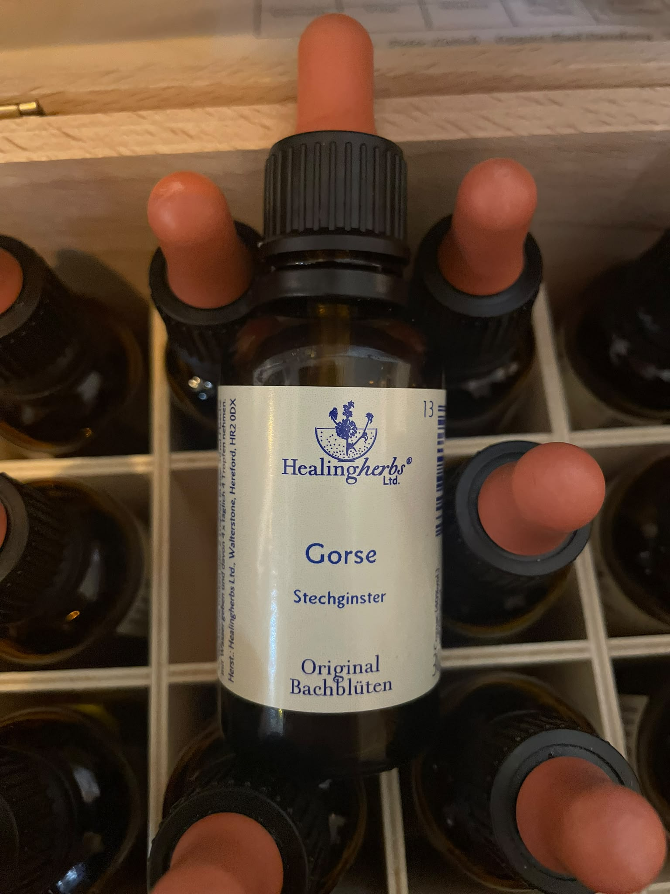
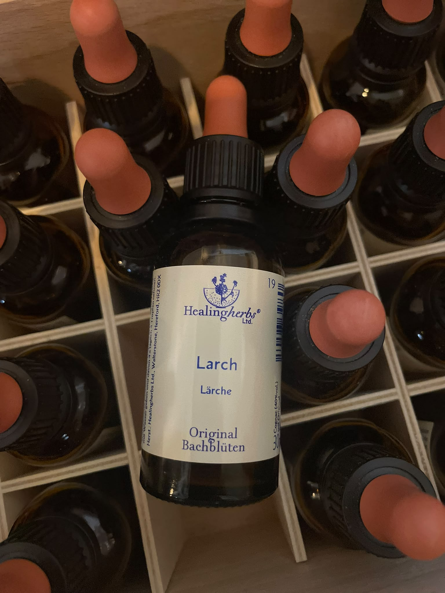
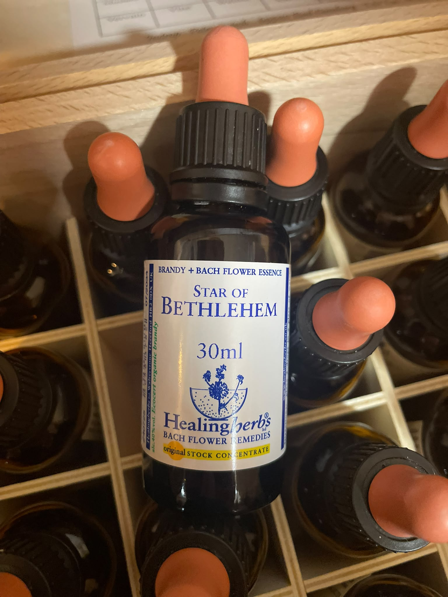

Gorse - Neue Hoffnung
Wenn Hoffnung und Zuversicht verloren gegangen sind, hilft Gorse dabei, wieder Licht zu sehen und an positive Veränderungen zu glauben.

Larch - Selbstvertrauen
Wenn Selbstzweifel dich zurückhalten, unterstützt Larch dich dabei, an deine Fähigkeiten zu glauben und dir mehr zuzutrauen.

Wild Rose - Lebensfreude
Wenn Gleichgültigkeit und Resignation den Alltag bestimmen, lädt Wild Rose dazu ein, neue Lebensfreude und Begeisterung zu entdecken.

Star of Bethlehem - Trost und Geborgenheit
In Zeiten von Schock, Kummer oder seelischer Erschütterung steht Star of Bethlehem für Trost, inneren Frieden und liebevolle Unterstützung.
Bachblüten werden traditionell als sanfte emotionale Begleitung eingesetzt.